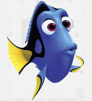

ROBÔ SUCATA
Missão ZERO
Somos Interdisciplinares?
Segunda-Feira - 5 de Fevereiro de 2024
Inicialmente, é importante ressaltar que o grupo é formado por:
Apenas com esse levantamento, foi possível concluir que nosso grupo é interdisciplinar, visto que os integrantes
apresentam formação específica em diferentes áreas da ciência. Além disso, vale ressaltar
que cada estudante apresenta seu próprio repertório sociocultural-histórico que, quando
compartilhado por vários indivíduos, contribui para a construção de conhecimento.
Outrossim, estabelecemos apoiar as ideias de todos ao longo do quadrimestre letivo, de
modo a valorizar e incentivar a criatividade e a criticidade ao elaborar, planejar, executar e
avaliar os projetos produzidos ao longo da disciplina, assim, enfatizamos nossa
predisposição favorável em compartilhar e adquirir o conhecimento com o objetivo de
alcançar uma aprendizagem dinâmica significativa.
Nossas Fraquezas?
Segunda-Feira - 5 de Fevereiro de 2024
Entretanto, ainda é preciso ressaltar a existência de fraquezas que nosso grupo apresenta, como o fato da nossa formação ocorrer na mesma instituição de ensino, tal que apresenta como objetivo proporcionar uma base sólida e geral para todos os discentes, logo, podemos ter uma opinião enviesada ao decorrer dos projetos, o que dificulta explorar e imaginar além da bolha sem uma determinada orientação.
Idealizando o Robô
Segunda-Feira - 5 de Fevereiro de 2024
Com a discussão realizada com o grupo sobre sermos interdisciplinares, foi possível idealizar nosso robô. No caso, como os integrantes atuam em diferentes áreas de formação, a capacidade de nos planejar, adaptar para atingirmos um consenso, visto o vasto compartilhamento de conhecimento, seria necessário. Com isso, a capacidade de ADAPTAÇÃO foi o ponto de partida para a construção do Truck-Bee.
Materiais Utilizados
Segunda-Feira - 5 de Fevereiro de 2024
Por ser nossa primeira atividade em grupo, foi muito divertido e cada um contribuiu para que fosse entregue no tempo correto. Para a construção do nosso robô-caminhão "Truck-Bee" foram necessários os seguintes materiais:
Materiais


Construindo o TRUCK-Bee
Segunda-Feira - 5 de Fevereiro de 2024
A seguir, veja o processo de construção do nosso robô. No caso, o corpo/estrutura do caminhão foi feito com as 4 caixas + fita adesiva. Por sua vez, para o rosto, as canetinhas coloridas foram extremamente úteis. Além disso, as tampinhas foram ótimas para a criação dos braços/rodas do Truck-Bee.


Apresentação e Critérios de Avaliação
Segunda-Feira - 5 de Fevereiro de 2024
Para a competição, todos os robôs foram apresentados e 3 quesitos foram considerados para avaliação:
De modo geral, achamos criativa a ideia proposta pela equipe que desenvolveu o "ManoDuck" (a ideia que eles adotaram para manter o foco em um único ponto, visto a interdisciplinaridade da respectiva equipe). Para a estética, demos ênfase ao nosso robô Truck-Bee, dada a sua flexibilidade em ser 2 em 1: robô e caminhão.
Por fim, nosso grupo foi responsável pela apuração dos votos da categoria “Criatividade” na "Missão Zero: Meu Robô Sucata". Veja a seguir, a contabilização dos votos para esta categoria:
Equipe
Todos compareceram e auxiliaram no processo de discussão e criação do "Robô Sucata". Além disso, conseguimos finalizar no tempo proposto.
Integrantes
-
Gabriel Cunha
Mickey Mouse -
 Gabriel Freitas
Gabriel Freitas
Charmander -

Ligia Herrera
Dory


Tags
Truck-Bee Robô Adaptável Interdisciplinar Equipe Flexível Criatividade Estética Onomástica